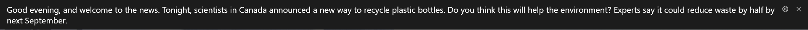

Live captions for Windows 10
Captions for anything your PC plays: videos, calls, streams, games. It runs entirely on your computer, needs no GPU, and stays out of the way in a bar at the top of the screen.
Unzip and run: no installer, no account, no .NET to install.
An illustration of the caption bar. New words type out letter by letter as they're recognized.
What it does
The same idea as the Live Captions feature in Windows 11, built for the PCs that can't get it.
Any audio, any app
Listens to whatever your speakers play, and can mix in your microphone. Switch to headphones and it follows.
Offline and private
Speech recognition runs on your PC. Nothing is uploaded, and there's no account and no telemetry.
Words as they're spoken
A streaming model writes punctuated, capitalized text about 1.3 s behind the speaker, using a few percent of one CPU core.
Docked like the taskbar
Sits at the top or bottom and reserves its strip of the screen, so maximized windows don't cover it. Or float it anywhere.
Smooth text
New words type out letter by letter instead of jumping in blocks. Choose Smooth, Quick or All at once.
Win + Ctrl + L
The same shortcut as Windows 11. Also caption styles, text sizes, 1–5 lines, a profanity filter, transcripts, and start with Windows.
Portable
Settings, transcripts and models all live in one folder next to the app. To uninstall, delete the folder.
Optional extras
Vosk models for 35 other languages, and an extra Whisper pass that can run on any GPU through Vulkan.
The real thing
A screenshot of the caption bar docked across the top of a 1920 × 1080 screen.

How it works
It uses the same kind of speech model as Windows 11's Live Captions: a streaming model that hears each moment of audio once, instead of re-reading whole clips.
Capture
Whatever your PC plays is captured, converted to 16 kHz and buffered, so no audio is dropped even when the PC is busy.
Recognize
Kroko, a compact streaming model run by sherpa-onnx, turns each 1.28 s of sound into words, punctuation included.
Show
Words type into a caption bar that Windows treats like a second taskbar. Quiet moments cost almost no CPU.
Accuracy and speed
Measured on a Ryzen 5 5600G. "Word errors" is the share of words wrong or missing, so lower is better.
| Speech engine | Clear speech | Fast speech | Fast speech + music | CPU per second of audio |
|---|---|---|---|---|
| Vosk (older model) | 6.5–9.7% | 6.9–16.7% | 37.5% | 0.68–1.57 s |
| NeMo streaming | 3.2% | 16.7–18.1% | 23.6% | 0.10 s |
| Kroko (included) | 0.0% | 1.4–4.2% | 4.2% | 0.06 s |
These test clips were made with the Windows text-to-speech voices, which are easier to understand than most real recordings. Expect more mistakes on real-world audio, especially with names and jargon.
Getting started
There's no installer: unzip the download, run LiveCaptions10.exe, and play something.
Controls
- Win + Ctrl + L
- Turn captions on or off
- Tray icon
- Left-click to turn on or off; right-click for settings
- ⚙ on the bar
- Position, style, text size, lines, how text appears, engine
- Mouse wheel
- Scroll back through earlier captions
Requirements
- Windows 10 or 11, 64-bit
- About 300 MB of memory while running
- No GPU, internet connection or .NET install needed
- English is included; other languages via Vosk
Good to know
- Captions trail the speaker by about 1.3 seconds.
- Uncommon names and terms can come out wrong, and numbers are written as words.
- Apps that use exclusive-mode audio can't be captured.
Try it
Free, open source, and about a minute from download to captions.